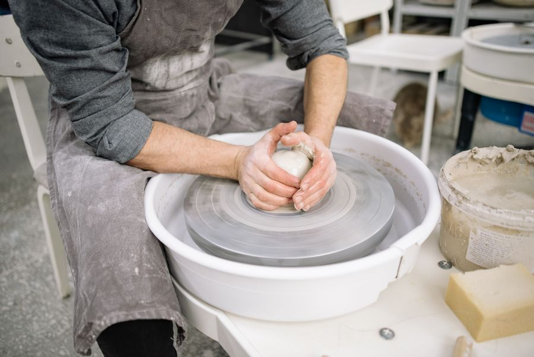

知ってもらう機会
何ができる人なのか。
必要な相手に伝わる入口を持てていない。
事業づくり講座
あなたの知識、技術、サービスを、
必要とする人に届く事業へ。
一人で始める人も、すでにお店や事業を持つ人も。AIを使い、Webでの発信、申し込み受付、顧客管理、資料づくりを自分で進める力を学びます。
学びの流れを見る ↓コースで学び、最後は1時間の制作課題へ。
現在、開講に向けて準備しています。


Why start?
「提供できるものはある。でも、届ける仕組みがない。」
教える、作る、相談に乗る、おいしい料理を届ける。提供できる価値はあるのに、Webページや顧客管理の準備で止まっていませんか。あなたの得意を必要とする人へ届ける仕組みを、自分で作れるようになりましょう。
何ができる人なのか。
必要な相手に伝わる入口を持てていない。
興味を持ってもらえても、
内容・料金の確認や申し込みに進めない。
長年の教え方や知見が、
繰り返し届けられる教材になっていない。
その一歩を、自分で進めるための講座です。
Features
相談で終わらせず、実際に使えるものを。自分の事業を題材に、作る力を身につけます。
Webページ、申し込み受付、顧客管理、提供する資料。事業に必要なものを、ひとつの流れで作ります。
完成したものを受け取るだけでなく、自分で作り、確かめ、直せるようになる。それが、この講座の目標です。
コースの内容を見る得意なこと、大切にしている考え方、サービスの内容。頭の中や手元の資料に散らばっている情報を、AIが参照できる「仕事のファイル」にまとめます。
何を読んで、どんな手順で進めるか。AIへの作業ルールも一緒に整え、自分の事業に沿ったページや資料を作るための土台にします。
学ぶ内容を見てみる自分のファイルをもとに、実際に使うページや資料を制作。できたものを確かめ、使ってみて気づいたことを、自分で修正していきます。
何を、なぜ変えたのかもファイルに残す。次の制作にその記録を活かし、新しいサービスでも繰り返し使える手順を身につけます。
最後の1時間の制作課題へ作ったもの ＋ 修正した理由 ＋ 次に活かすこと
誰に何を提供するかを、伝わるページへ。文章や内容の変更も自分で。
申し込みフォームと、ご案内の流れを整えます。
お客様の情報、日程、次の対応を把握できる管理表を作ります。
あなたの専門知識を資料に。お客様に合わせて更新します。
あなたの仕事では、どこから始められるでしょう。
For you
始めたい人も、すでに事業を営む人も。必要なのは、今ある価値を届けるための準備です。
得意なことに、届ける力を足していく。
自分に合うか相談するCase study
知識や資格に、デジタルで届ける仕組みが加わると。
英語ができる、という得意を持つ大学生。Webページを作り、生徒を管理し、教えるための資料も用意して、英語指導を事業にしています。
専門性を、誰かに届けられる形にする。そのためにAIを使えることが、事業づくりの力になります。
代表から共有された事業化の事例です。本講座の受講実績・収益実績ではありません。
Student stories
公開できる受講実績は、ただいま準備中です。
以下のコメント・人物イラストは、目指す変化を描いた架空のサンプルです。実際の体験談ではありません。
教えることはできても、生徒の募集は難しいと感じていました。自分の経験を整理し、レッスンの案内や教材を形にする。退職後にもできる仕事を考えるきっかけになりました。
退職した教師という設定一人でサービスを提供していて、Webの更新や顧客管理は後回しでした。自分でページと管理の仕組みを作る練習を通じて、事業の進め方を整理できました。
一人会社の経営者という設定料理には自信があっても、お店の紹介や問い合わせの管理に悩んでいました。紹介ページや案内資料を自分で直す練習で、日々の仕事に使うイメージが持てました。
飲食店を営む人という設定01 / 03
Course & Contact
3ヶ月（グループ）／6ヶ月（グループ）
3ヶ月（パーソナル）／6ヶ月（パーソナル）